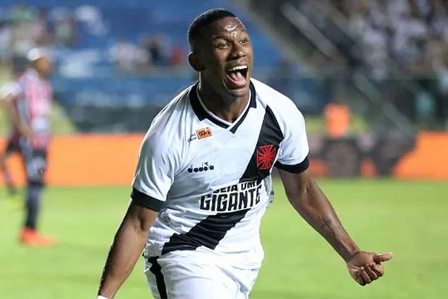

Atividades Desenvolvidas
Em toda sua carreira como jogador profissional, passou pelos times:
- • Base do Botafogo
- • Botafogo
- • TSV 1860 Munique (terceira divisão da alemanha)
- • Athletico Paranaense
- • Pyramids FC (campeonato egípcio)
- • Ohod Al-Medina (campeonato árabe)
- • Vasco da Gama
- • América-MG
Sem informação :(
Participou de 12 jogos, fez 1 gol e tomou 1 cartão amarelo.
Participou de 4 jogos e tomou 1 cartão vermelho.
Participou de 24 jogos, fez 5 gols, deu 1 assistência e tomou 2 cartões amarelos.
Participou de 3 jogos, fez 2 gols, deu 2 assistências e tomou 1 cartão amarelo.
Participou de 11 jogos, fez 3 gols e tomou 1 cartão amarelo.
Participou de 44 jogos, fez 7 gols e tomou 2 cartões amarelos.
Participou de 19 jogos, fez 2 gols e tomou 2 cartões amarelos.
Ao longo de sua vida, participou de 117 jogos, marcou 20 gols e deu 2 assistências, chegando a valer 1.5 milhão de euros.
Possui uma Copa Sulamericana, conquistada no ano de 2018 pelo Athletico Paranaense.
Fonte: Transfermarkt